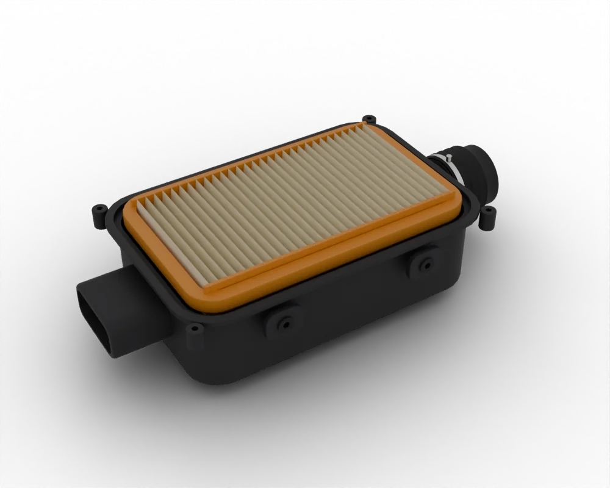
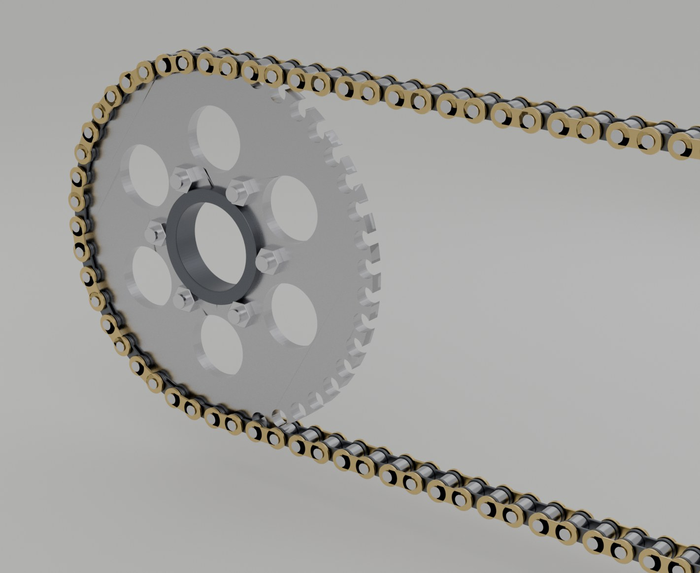

Spare parts / Honda / CG125 / CG160 / Air filter
Honda CG125 / CG160 air filter
Air filter for the Honda CG125 / CG160: when to replace it, what it costs, where to buy it and how to fit it.

3D renderWhere to buy
- Google ShoppingSearch results for this partgoogle.com ↗
- eBaySearch results for this partebay.com ↗
- AliExpressSearch results for this partaliexpress.com ↗
- AmazonSearch results for this partamazon.com ↗
- Jumia KenyaMarketplace: Boda-boda consumables, tyres, batteriesjumia.co.ke ↗
- Bajaj Genuine PartsOEM direct: Official Bajaj parts app and distributor locator: Pulsar, Platina, Boxerbajajauto.com ↗
- TVS Genuine PartsOEM direct: Official TVS parts shop: Jupiter, Apache, Raider, HLXtvsmotor.com ↗
Check the part number for your model year before you buy. Genuine (OEM) parts first; good aftermarket parts are fine for wear items. Links open shop searches; Moto Zero earns nothing from them today and will say so here if that changes.
Fit it yourself
Fitment
| Model | Honda CG125 / CG160 |
| Type | Commuter |
| Engine | 125-160 cc |
| Final drive | Chain |
| Brakes | Disc and Drum |
| Main markets | LatAm/Africa |
Questions
How often should I replace the air filter on a Honda CG125 / CG160?
As a guide, 5,000-12,000 km (dusty roads sooner). The owner's manual for your model wins, and riding on dusty roads, with a passenger or with heavy loads shortens it.
How much does a Honda CG125 / CG160 air filter cost?
Typically US$ 4 to 50, depending on genuine or aftermarket and the shop. Prices are indicative.
Can I replace the air filter myself?
The job is rated 1 of 5 for difficulty. Follow the step-by-step guide and the values for your model.
More parts for the Honda CG125 / CG160

3D render 3D render
3D render Plate
Plate Photo
Photo 3D render
3D render 3D render
3D renderAll parts for the Honda CG125 / CG160 → Air filter for other bikes →